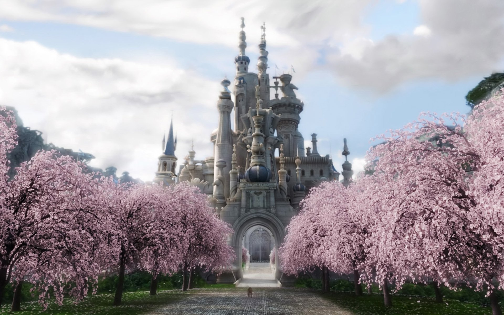

In Norse mythology, Kara is a valkyrie, attested in the prose epilogue of the Poetic Edda poem Helgakviða Hundingsbana II. The epilogue details that "there was a belief in the pagan religion, which we now reckon an old wives' tale, that people could be reincarnated,"and that the deceased valkyrie Sigrún and her dead love Helgi Hundingsbane were considered to have been reborn as another Helgi and valkyrie couple; Helgi as Helgi Haddingjaskati and Sigrún as the daughter of Halfdan—the valkyrie Kára. According to the epilogue, further information about the two can be found in the work Káruljóð, which has not survived.
Gunnr is an Old Norse term meaning "battle". It is the name of a Valkyrie in Norse mythology, and was also used as a feminine given name. The modern forms Gun and Gunn remain in use as a feminine given name in Scandinavia. Gunnr is also mentioned in the Völuspá in a list of valkyries, Gunnr, Hildr, Göndul / ok Geirskögul. The Darraðarljóð gives Guðr as one of six names of Valkyries. In the Prose Edda, Gunnr is one of three Valkyries who always ride out to choose the slain and decide the outcome of the battle. The others are Róta and Skuld.
Geirdriful (name meaning "Spear-flinger") is the name of a valkyrie in Norse Mythology, nothing known about her but found in the valkyrie list in the Nafnaþulur. In legend, Geirdriful is the Master of Arms in Vahalla. Her responsibility being to train and arm Odin's einherjar, his personal army for when Ragnarok comes. She was said to have her hands full training them. Geirdriful's armour design is based on a owl.
In Norse Mythology, Eir a goddess and/or valkyrie associated with medical skill. Eir is attested in the Poetic Edda, compiled in the 13th century from earlier traditional sources; the Prose Edda, written in the 13th century by Snorri Sturluson; and in skaldic poetry, including a runic inscription from Bergen, Norway from around 1300. Scholars have theorized about whether these three sources refer to the same figure, and debate whether Eir may have been originally a healing goddess and/or a valkyrie.
Olrun is a valkyrie and a swan-maiden, the daughter of Kjárr of Valland. She was a companion of Hlaðguðr svanhvít and Hervör alvitr, the daughters of king Hlödvér. One morning, as they were spinning flax on the shore of a lake, they were encountered by the brothers Slagfiðr, Egil, and Völundr. The brothers brought the maidens to their dwelling, where Egil took Ölrún to wife. After several years she and the other two valkyries flew away to find battles, and came back no more. Egil went east to look for her.
In Norse mythology, Rota is a valkyrie. Róta is attested in chapter 36 of the Prose Edda book Gylfaginning, where she is mentioned alongside the valkyries Gunnr and Skuld, and the three are described as "always [riding] to choose who shall be slain and to govern the killings." Otherwise, Róta appears in two kennings, one by Egill Skallagrímsson and one by Hallfreðr vandræðaskáld. Theories have been proposed about the possible appearance of Róta in Gesta Danorum and the meaning of her name.
In Norse mythology, Gondul is a valkyrie. In legend, Gondul was considered the most beautiful of the Valkyries. Known of her silver tongue, sharp wit and struck a figure so stunning it would literally drive men insane. Thus, Odin forbid her from entering Midgard after a time, for insanity is not a welcome trait in Valhalla. Said by Mimir.
Hildr is attested in the Prose Edda as Högni's daughter and Hedin's wife in the Hjaðningavíg. She had the power to revive the dead in battlefields and used it to maintain the everlasting battle between Hedin and Högni. Hildr is also mentioned along with other valkyries in Völuspá, Darraðarljóð and other Old Norse poems. The Old Norse word hildr is a common noun meaning "battle" and it is not always clear when the poets had the valkyrie in mind, as a personification of battle.
Sigrún (Old Norse "victory rune"). She is immensely powerful, with Mimir saying that she is the strongest of all the Valkyries, with the presumed exception of Freya, the former Valkyrie Queen. Despite being referred to as the Queen of the Valkyries, Sigrún expressed that she only ruled in the absence of the true queen, technically making her a Regent.
Freya carries her sword everywhere, despite the fact that she's unable to use it in combat. This demonstrates that she has not given up on her search for recovering her warrior spirit and her Valkyrie wings to get revenge on Odin. With the intent of reclaiming her Valkyrie powers, it is clear that Freya has not given up her drive for vengeance and she may never let it go.